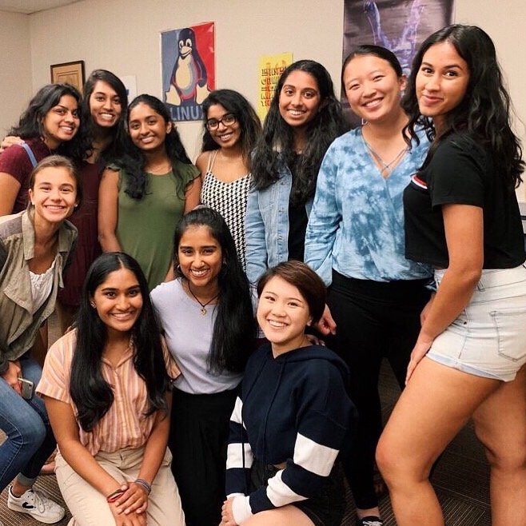
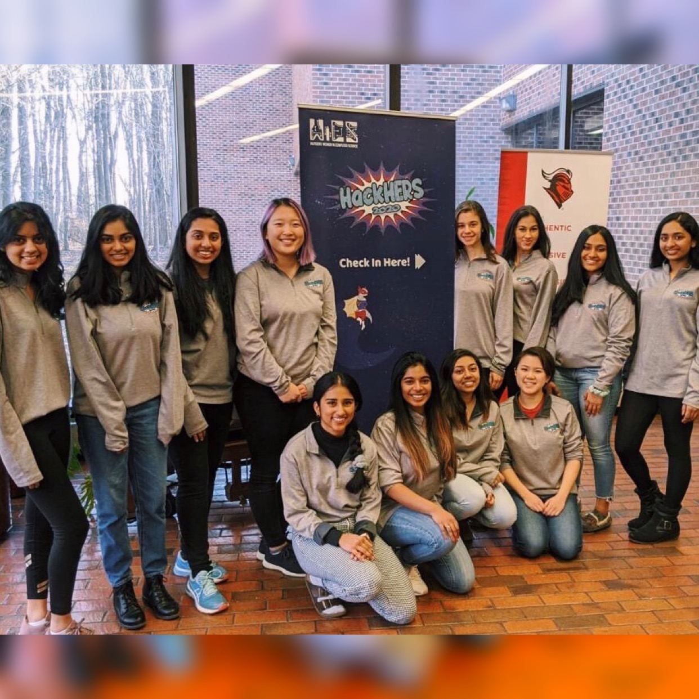
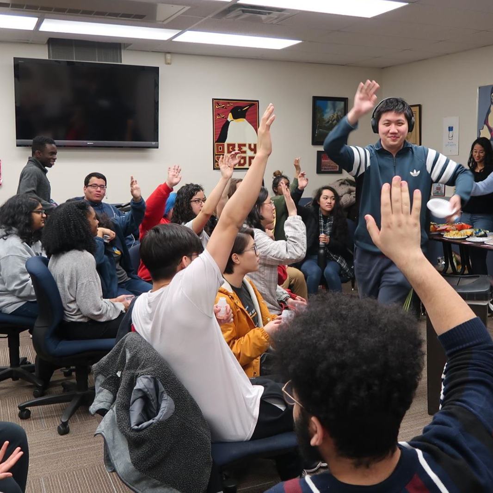
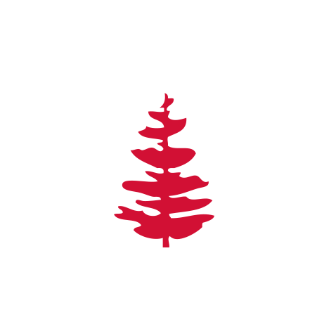

WOMEN IN COMPUTER SCIENCE
Rutgers Women in Computer Science is a student organization dedicated to the advancement of womxn in CS. We aim to build a supportive community, promote educational and professional development, and empower our members to overcome societal barriers.

From April '19 to April '20, I was the Graphics Chair of WiCS. In this position, I exercised my design skills to fortify our brand image, attract company sponsors, and market our events to thousands. Currently, I am the Hackathon Director of WiCS and organize our annual women-centric hackathon, HackHERS.
HACKHERS
HackHERS is the annual, women-centric hackathon at Rutgers University. We aim to create a space in which womxn can explore tech culture and be empowered to create with code.

From April '19 to April '20, I was the Graphics Chair of WiCS. In this position, I exercised my design skills to fortify our brand image, attract company sponsors, and market our events to thousands. Currently, I am the Hackathon Director of WiCS and organize our annual women-centric hackathon, HackHERS.
GIRLS WHO CODE • DOUGLASS-DIMACS COMPUTING CORPS
Rutgers Douglass-DIMACS Computing Corps is Rutgers University's official Girls Who Code College Loops chapter. We dedicate ourselves to K-12 outreach encourage young girls to pursue computer science though technical workshops, panels, hackathons, and more.

From April '19 to April '20, I was the Graphics Chair of WiCS. In this position, I exercised my design skills to fortify our brand image, attract company sponsors, and market our events to thousands. Currently, I am the Hackathon Director of WiCS and organize our annual women-centric hackathon, HackHERS.
UNDERGRADUATE STUDENT ALLIANCE OF COMPUTER SCIENTISTS
Rutgers Douglass-DIMACS Computing Corps is Rutgers University's official Girls Who Code College Loops chapter. We dedicate ourselves to K-12 outreach encourage young girls to pursue computer science though technical workshops, panels, hackathons, and more.

From April '19 to April '20, I was the Graphics Chair of WiCS. In this position, I exercised my design skills to fortify our brand image, attract company sponsors, and market our events to thousands. Currently, I am the Hackathon Director of WiCS and organize our annual women-centric hackathon, HackHERS.
SAS HONORS PROGRAM TUTORING
Rutgers Douglass-DIMACS Computing Corps is Rutgers University's official Girls Who Code College Loops chapter. We dedicate ourselves to K-12 outreach encourage young girls to pursue computer science though technical workshops, panels, hackathons, and more.

From April '19 to April '20, I was the Graphics Chair of WiCS. In this position, I exercised my design skills to fortify our brand image, attract company sponsors, and market our events to thousands. Currently, I am the Hackathon Director of WiCS and organize our annual women-centric hackathon, HackHERS.
DOUGLASS RESIDENTIAL COLLEGE
Rutgers Douglass-DIMACS Computing Corps is Rutgers University's official Girls Who Code College Loops chapter. We dedicate ourselves to K-12 outreach encourage young girls to pursue computer science though technical workshops, panels, hackathons, and more.

From April '19 to April '20, I was the Graphics Chair of WiCS. In this position, I exercised my design skills to fortify our brand image, attract company sponsors, and market our events to thousands. Currently, I am the Hackathon Director of WiCS and organize our annual women-centric hackathon, HackHERS.